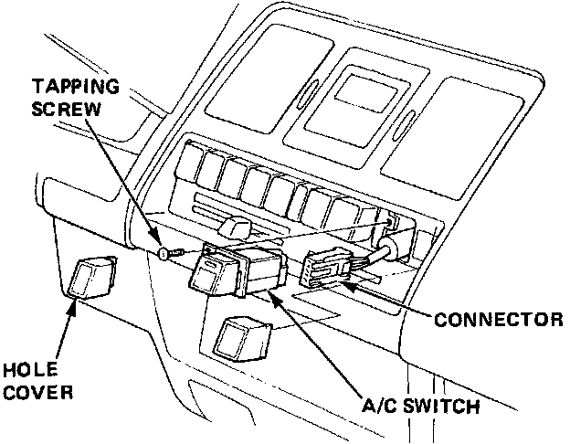
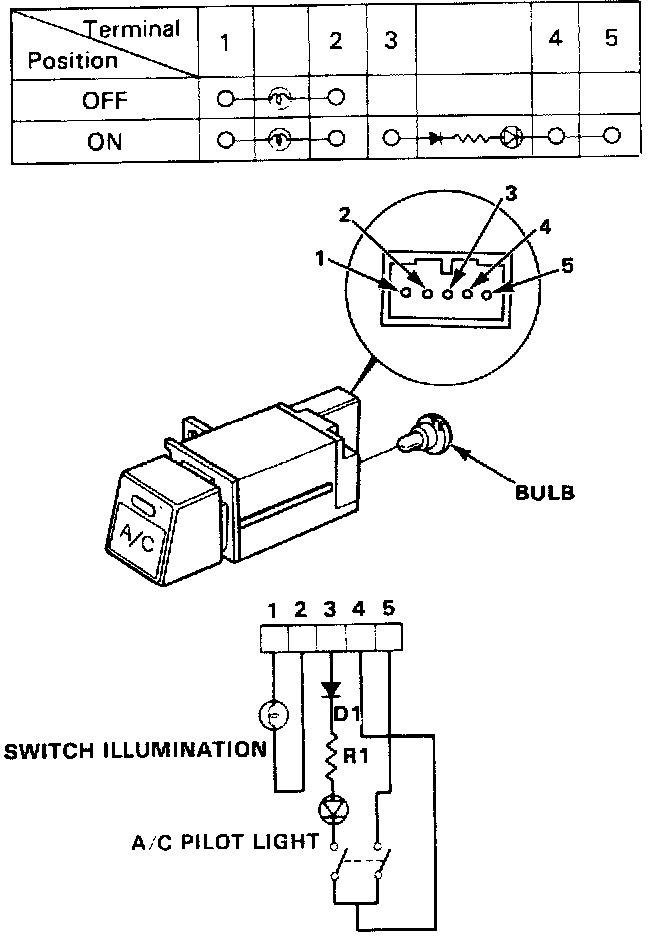

A/C Switch Testing
A/C Switch Testing1. Pull Out the screw hole cover.
2. Remove the screw and pull the switch out.

3. Disconnect the switch wire connector and remove the A/C switch.

4. Check for continuity between the terminals as shown in the chart.